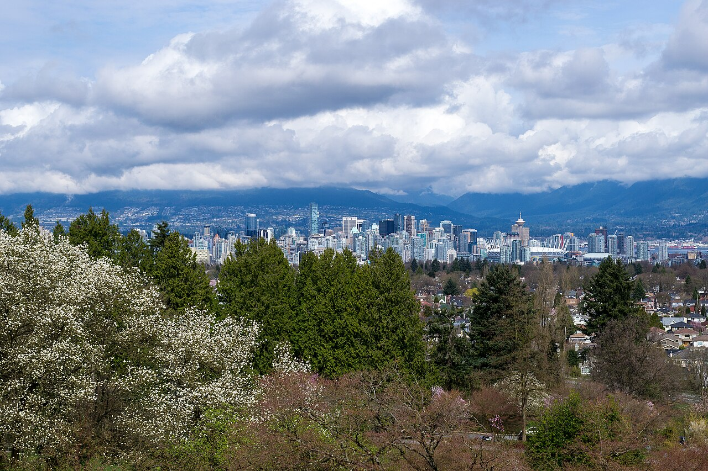

已訂航班與機場交通
| 段 | 日期 | 航班 / 交通 | 備註 |
|---|---|---|---|
| Calgary → Vancouver | 7/25（六） | WestJet WS133 YYC 21:55 → YVR M 22:35 | Banff hike 後當晚飛。抵達的是 YVR，深夜進市區仍相對單純。 |
| YVR → Downtown | 7/25 深夜 | Canada Line 或計程車/Uber | 22:35 抵達仍可搭 Canada Line。若很累或行李多，直接叫車最省力。 |
| Vancouver → Taipei | 7/28（二） | 長榮 BR009 YVR M 02:00 → TPE T2 7/29 04:50 | 實際是 7/27 深夜去 YVR。建議 23:00 左右到機場。 |
更新後好處：YVR 進、YVR 出，交通簡單很多。7/26 和 7/27 都是完整遊玩日，行程不用再壓縮。
溫哥華每日行程
7/25（六）深夜 ・ 抵達休整
YVR 22:3521:55
WS133 從 YYC 起飛
22:35
抵達 YVR
~24:00
入住 Downtown Vancouver

7/26（日）Day 1 ・ 市區經典
Gastown → Stanley Park → Granville Island
7/27（一）Day 2 ・ 北岸 + 公園 + 機場
吊橋 → Queen Elizabeth Park → YVR08:30
North Shore 吊橋二選一Capilano / Lynn Canyon
14:30
Queen Elizabeth Park + Bloedel 溫室地圖
18:30
回飯店拿行李、晚餐、梳洗
21:30-22:15
Canada Line → YVR
朋友景點清單 ・ 保留與備案
| 景點 | 狀態 | 備註 |
|---|---|---|
| Stanley Park | Day 1 | 溫哥華經典，建議保留。 |
| Granville Island | Day 1 | 市場美食適合下午到傍晚。 |
| Gastown / Waterfront | Day 1 | 短時間也容易完成。 |
| Capilano / Lynn Canyon | Day 2 | 二選一即可。 |
| Queen Elizabeth Park | Day 2 | 夕陽與城市景觀，接去 YVR 很順。 |
| YVR Outlet | 可選 | 只有真的想逛 outlet 才放，否則不優先。 |
| Whistler / Victoria | 略過 | 時間太短，不適合這趟。 |
住宿策略
| 日期 | 建議 | 理由 |
|---|---|---|
| 7/25-7/28 | Downtown Vancouver 連住三晚 | 深夜抵達直接睡；7/27 紅眼前可以回房拿行李、洗澡、整理。 |
| 住宿區域 | Waterfront、Robson、Yaletown、Coal Harbour | 去景點和最後一晚搭 Canada Line 去 YVR 都方便。 |
雖然 7/28 02:00 就起飛，但訂到 7/28 退房最舒服。若要省錢，再考慮 7/27 late checkout + 行李寄放。
出發前預訂 / 待辦
- ☐ 訂 Downtown Vancouver 住宿 7/25-7/28 三晚。
- ☐ 7/25 早上出門 hike 前，把飛 Vancouver 的行李整理好。
- ☐ Capilano 吊橋若要去，先線上購票；走 Lynn Canyon 則免。
- ☐ 如果想吃 Seasons in the Park 夕陽餐，先訂位。
- ☐ 冰酒/伴手禮可在 Vancouver 市區或 YVR duty free 買。
- ☐ 7/27 晚上目標 23:00 左右抵達 YVR，搭 BR009。
景點相簿



溫哥華延伸行程最新版：已套用已訂航班 WS133 與 BR009，YVR 進、YVR 出。